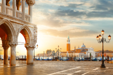

Ита́лия (итал. Italia [iˈtaːlja], официальное название — Италья́нская Респу́блика (итал. Repubblica Italiana [reˈpubːlika itaˈljaːna]) — государство в Южной Европе, в центре Средиземноморья. Входит в Евросоюз и НАТО с момента их создания, является третьей по величине экономикой еврозоны.
Граничит с Францией на северо-западе (протяжённость границы — 488 км), Швейцарией (740 км) и Австрией (430 км) — на севере, Словенией — на северо-востоке (232 км).
Внутри территории Италии находятся два государства-анклава: государство Сан-Марино и расположенное внутри территории Рима ассоциированное с Италией государство Ватикан, с каждым из которых Италия имеет внутреннюю границу протяжённостью соответственно 39 км и 3,2 км.
Занимает Апеннинский полуостров, крайний северо-запад Балканского полуострова, Паданскую равнину, южные склоны Альп, острова Сицилия, Сардиния и ряд мелких островов[7].
На территории Италии находится 55 памятников Всемирного наследия ЮНЕСКО — Италия разделяет с Китаем первое место по их количеству[8].
